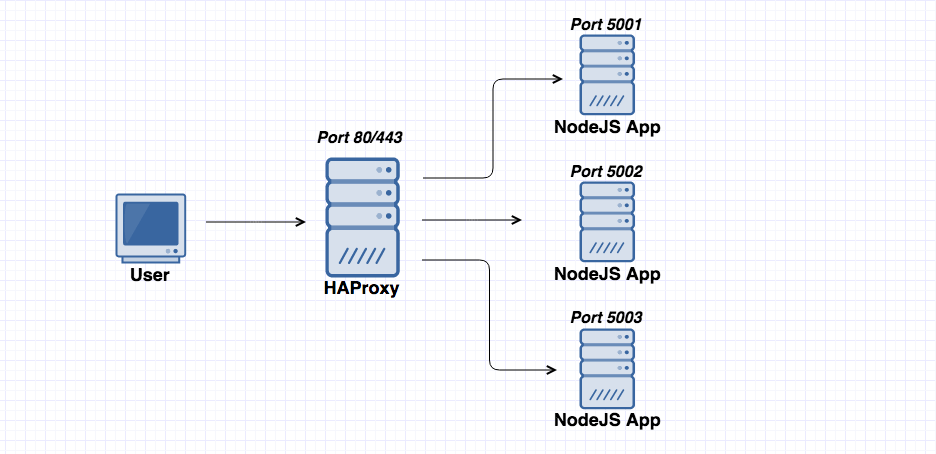
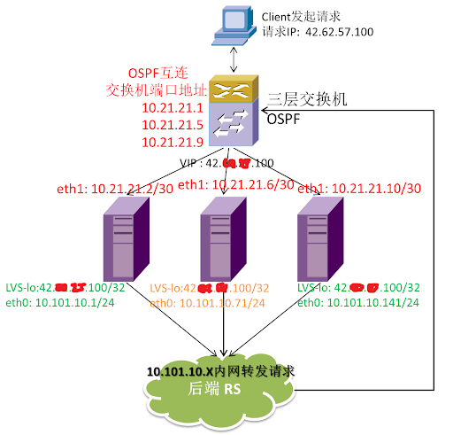

[NOTE] Updated January 20, 2020. This article may have outdated content or subject matter.
0x01 介绍
百家饭内容，将测试环境的最终结果整理了下

0x02 功能
- 负载均衡：L4(TCP) 和 L7(HTTP/HTTPS) 两种模式，支持 RR(roundrobin) / 静态 RR / LC / IP Hash/ URI Hash/ URL_PARAM Hash/ HTTP_HEADER Hash 等丰富的负载均衡算法
- 健康检查：支持 TCP 和 HTTP 两种健康检查模式
- 会话保持：对于未实现会话共享的应用集群，可通过 Insert Cookie / Rewrite Cookie / Prefix Cookie，以及上述的多种 Hash 方式实现会话保持
- SSL：HAProxy 可以解析 HTTPS 协议，并能够将请求解密为 HTTP 后向后端传输
- HTTP：请求重写与重定向
- 监控与统计：HAProxy 提供了基于 Web 的统计信息页面，展现健康状态和流量数据。基于此功能，使用者可以开发监控程序来监控 HAProxy 的状态
balance
- HAProxy 的算法现在也越来越多了，具体有如下：
- roundrobin，表示简单的轮询，这个不多说，这个是负载均衡基本都具备的
- static-rr，表示根据权重，建议关注
- leastconn，表示最少连接者先处理，建议关注
- ource，表示根据请求源 IP，这个跟 Nginx 的 IP_hash 机制类似，我们用其作为解决 session 问题的一种方法，建议关注
- ri，表示根据请求的 URI
- rl_param，表示根据请求的 URl 参数’balance url_param’ requires an URL parameter name
- hdr(name)，表示根据 HTTP 请求头来锁定每一次 HTTP 请求
- rdp-cookie(name)，表示根据 cookie(name) 来锁定并哈希每一次 TCP 请求
real server
1
|
server tidb-3 172.16.18.13:4000 check port 4000 inter 2000 rise 2 fall 3
|
- port 4000 : 对目标机器 22 号端口健康检查；按照以下规则探测
- inter 2000 : 指间隔 2 秒做一次状态检测
- rise 2 : 检测 2 次状态为成功，恢复对该 RS 的流量转发
- fall 3 : 连续 3 次检测失败会被踢掉流量转发
0x03 配置文件示例
TiDB or MySQL 需要使用 L4 (OSI) TCP 层模式
- 使用以下配置文件，可以通过
http://hostIP:1111 查看 HAProxy 运行状态
1
2
3
4
5
6
7
8
9
10
11
12
13
14
15
16
17
18
19
20
21
22
23
24
25
26
27
28
29
30
31
32
33
34
35
36
37
38
39
40
41
42
43
44
45
46
47
48
49
50
51
52
53
54
55
56
57
58
59
60
61
62
63
64
65
66
67
|
#---------------------------------------------------------------------
# Example configuration for a possible web application. See the
# full configuration options online.
#
# http://haproxy.1wt.eu/download/1.4/doc/configuration.txt
#
#---------------------------------------------------------------------
#---------------------------------------------------------------------
# Global settings
#---------------------------------------------------------------------
global
# to have these messages end up in /var/log/haproxy.log you will
# need to:
#
# 1) configure syslog to accept network log events. This is done
# by adding the '-r' option to the SYSLOGD_OPTIONS in
# /etc/sysconfig/syslog
#
# 2) configure local2 events to go to the /var/log/haproxy.log
# file. A line like the following can be added to
# /etc/sysconfig/syslog
#
# local2.* /var/log/haproxy.log
#
log 127.0.0.1 local2
chroot /var/lib/haproxy
pidfile /var/run/haproxy.pid
maxconn 4000 # 最大连接数
nbproc 1 # haproxy 进程数，默认为单进程
user haproxy
group haproxy
daemon
# turn on stats unix socket
stats socket /var/lib/haproxy/stats
defaults
log global
retries 2
timeout connect 2s # 连接超时
timeout client 30000s # 客户端超时
timeout server 30000s # 服务器超时
option abortonclose # 当服务器负载很高的时候，自动结束掉当队列处理比较久的链接【不建议使用】
option redispatch # 当 serverId 对应的服务器挂掉后，强制定向到其他健康的服务器【不建议使用】
listen admin_stats
bind 0.0.0.0:1111 # 监控页面地址 & 端口
mode http
option httplog # 采用 http 日志格式
maxconn 4000 # 默认的最大连接数
stats refresh 30s # 统计页面自动刷新时间
stats uri /haproxy # 统计页面 url
stats realm Haproxy # 统计页面密码框上提示文本
stats auth admin:pingcap123 # 设置监控页面的用户和密码: admin, 可以设置多个用户名
stats hide-version # 隐藏统计页面上 HAProxy 的版本信息
stats admin if TRUE # 设置手工启动 / 禁用，后端服务器 (haproxy-1.4.9 以后版本)
listen tidb-cluster
bind 0.0.0.0:3306 # 对外 vip【virtual ip】 端口
mode tcp # 后端 mysql/tidb 需要使用 tcp / OSI L4 协议转发流量
balance roundrobin # 轮询转发流量
server tidb-1 172.16.18.11:4000 check port 4000 inter 2000 rise 2 fall 3
server tidb-2 172.16.18.12:4000 check port 4000 inter 2000 rise 2 fall 3
server tidb-3 172.16.18.13:4000 check port 4000 inter 2000 rise 2 fall 3
|
0x04 FAQ
如果不能转发流量，你可以检查下这里：在配置内核参数开发转发功能，在 /etc/sysctl.conf 文件中底部添加 net.ipv4.ip_forward = 1；最后执行 sysctl -p 命令使其生效
HA
Haproxy 的 HA 服务需要一个 keepalived 支持，这个 keepalived 主要作用是给 Linux 加了个灵活的网卡。方便主机切换网卡使用。

除 keep alived 服务之外其实还有 ospf + haproxy / ospf + lvs 架构，还有 ospf + lvs & haproxy 高级组网方式。【这里的 ospf + lvs 中的 lvs 需要使用 fullnet 流量转发策略】

Author
Jeff
LastMod
2020-01-20
License
CC BY-NC-ND 4.0 ｜ 本文不带任何官方色彩，最终解释权归本站所有